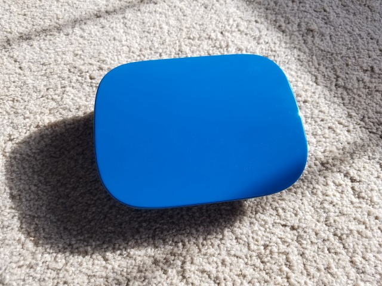

New Transmission Mount Installed
Progress wise not too much more has been done on the Civic this week. I had to help out my girlfriend put new front brakes + an oil change so I wasn’t feeling too motivated after that. My Dad helped out and welded in the new transmission bracket though. It came out pretty awesome and should (hopefully) have no problem mounting up the B swap.
I remembered I had some left over 3m vinyl wrap sitting in the basement and decided to try something different. Here’s the gas cap door removed from the car.

After vinyl wrapping it.

And reinstalled back on the car.

Not too sure how I feel about it. I only really tried if after seeing one listed on ebay for $60 bucks and thinking that’s an absurd price.
Here’s the mount my dad welded in. The originally transmission mount was removed because the car started life off as an automatic. Since I wanted to run the standard Hasport billet mounts and not need the wierd looking conversion mount I really had no other option.

Current status of the bay.

The passenger side strut tower is nearly done. Next weekend I’m gonna get down to business finishing up shaving the bay and hopefully have it ready for paint. The nice weather outside is really making me start to miss it.